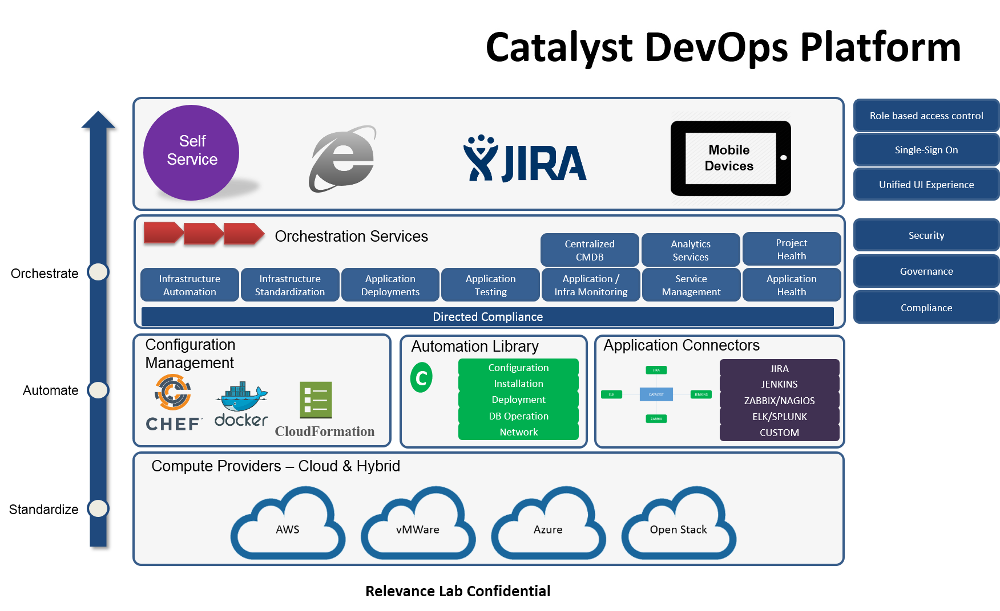

About RLCatalyst¶
RLCatalyst is an end-to-end automation platform that helps enterprises adopt devops maturity and benefits. Catalyst is powered by Chef and integrated with all major cloud providers like AWS, Azure, Openstack, VMware etc. It provides seamless Infrastructure Automation across data centers, environments, applications with Configuration Management & Service Orchestration to help enterprises achieve end-to-end IT DevOps Service Automation and being prepared for Web-scale IT. Few of the highlights of Catalyst are:

- It helps in adopting intelligent devops – from Unmanaged->Managed->Self-Service->Self-Aware->Self Heal Infrastructure
- It does Infrastructure automation, provisioning, Orchestration and management
- It helps automating the entire ALM cycle from Continuous Integration->Testing->Continuous Deployment and works with all major CI/CD tools
- It gives realtime-dashboard and alerts-based monitoring and remediation of cost, usage , health and performance of all IT assets
- Powered by Chef and integrated with Docker
How you can make use of Catalyst:
- Infrastructure Provisioning and Management: Do you need to provision infrastructure dynamically? Do you want to manage your heterogeneous environments? Do you want to control usage and cost? or Do you want to identify and retire your unused infrastructure? RLCatalyst has the solutions to all these challenges. It helps you towards a more efficient capacity planning and improved utilization
- Application Deployment: RLcatalyst provides you a seamless experience of managing your ALM lifecycle, with its one-click application deployment, on any of your cloud providers. You can reduce your deployment time from weeks to days to hours with better quality with a focus on performance and health of the application. It works with all latest CI/CD tools- Jenkins, JIRA, BitBucket, Github, SonarQube etc to name a few.
- Monitoring and Tracking : RLCatalyst provides you the near-real time information on the cost and usage of your infrastructure . This helps you to keep track of Cloud Capacity and to optimize your resources to ensure better utilization.